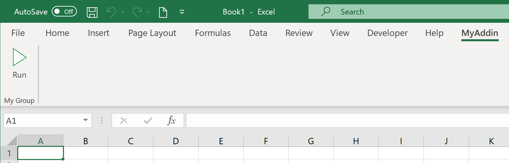
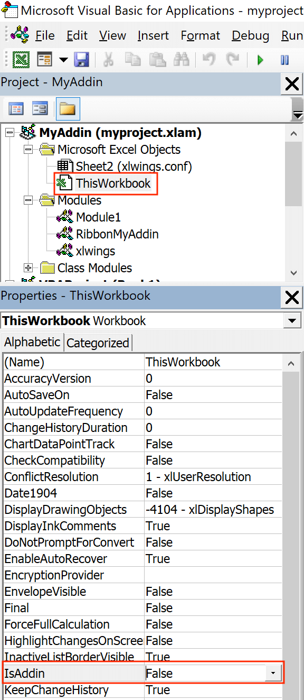

Custom Add-ins¶
在 0.22.0 版本加入.
Custom add-ins work on Windows and macOS and are white-labeled xlwings add-ins that include all your RunPython functions and UDFs (as usual, UDFs work on Windows only). You can build add-ins with and without an Excel ribbon.
The useful thing about add-in is that UDFs and RunPython calls will be available in all workbooks right out of the box without having to add any references via the VBA editor's Tools > References.... You can also work with standard xlsx files rather than xlsm files. This tutorial assumes you're familiar with how xlwings and its configuration works.
Quickstart¶
Start by running the following command on a command line (to create an add-in without a ribbon, you would leave away the --ribbon flag):
$ xlwings quickstart myproject --addin --ribbon
This will create the familiar quickstart folder with a Python file and an Excel file, but this time, the Excel file is in the xlam format.
Double-click the Excel add-in to open it in Excel
Add a new empty workbook (
Ctrl+Non Windows orCommand+Non macOS)
You should see a new ribbon tab called MyAddin like this:

The add-in and VBA project are currently always called myaddin, no matter what name you chose in the quickstart command. We'll see towards the end of this tutorial how we can change that, but for now we'll stick to it.
Compared to the xlwings add-in, the custom add-in offers an additional level of configuration: the configuration sheet of the add-in itself which is the easiest way to configure simple add-ins with a static configuration.
Let's open the VBA editor by clicking on Alt+F11 (Windows) or Option+F11 (macOS). In our project, select ThisWorkbook, then change the Property IsAddin from True to False, see the following screenshot:
{kind=link}

This will make the sheet _myaddin.conf visible (again, we'll see how to change the name of myaddin at the end of this tutorial):
Activate the sheet config by renaming it from
_myaddin.conftomyaddin.confSet your
Interpreter_Win/_MacorCondasettings (you may want to take them over from the xlwings settings for now)
Once done, switch back to the VBA editor, select ThisWorkbook again, and change IsAddin back to True before you save your add-in from the VBA editor. Switch back to Excel and click the Run button under the My Addin ribbon tab and if you've configured the Python interpreter correctly, it will print Hello xlwings! into cell A1 of the active workbook.
Importing UDFs¶
To import your UDFs into the custom add-in, run the ImportPythonUDFsToAddin Sub towards the end of the xlwings module (click into the Sub and hit F5). Remember, you only have to do this whenever you change the function name, argument or decorator, so your end users won't have to deal with this.
If you are only deploying UDFs via your add-in, you probably don't need a Ribbon menu and can leave away the --ribbon flag in the quickstart command.
Configuration¶
As mentioned before, configuration works the same as with xlwings, so you could have your users override the default configuration we did above by adding a myaddin.conf sheet on their workbook or you could use the myaddin.conf file in the user's home directory. For details see Add-in & Settings.
Installation¶
If you want to permanently install your add-in, you can do so by using the xlwings CLI:
$ xlwings addin install --file C:\path\to\your\myproject.xlam
This, however, means that you will need to adjust the PYTHONPATH for it to find your Python code (or move your Python code to somewhere where Python looks for it---more about that below under deployment). The command will copy your add-in to the XLSTART folder, a special folder from where Excel will open all files everytime you start it.
Renaming your add-in¶
Admittedly, this part is a bit cumbersome for now. Let's assume, we would like to rename the addin from MyAddin to Demo:
In the
xlwingsVBA module, changePublic Const PROJECT_NAME As String = "myaddin"toPublic Const PROJECT_NAME As String = "demo". You'll find this line at the top, right after theDeclarestatements.If you rely on the
myaddin.confsheet for your configuration, rename it todemo.confRight-click the VBA project, select
MyAddin Properties...and rename theProject NamefromMyAddintoDemo.If you use the ribbon, you want to rename the
RibbonMyAddinVBA module toRibbonDemo. To do this, select the module in the VBA editor, then rename it in thePropertieswindow. If you don't see the Properties window, hitF4.Open the add-in in the Office RibbonX Editor (see above) and replace all occurrences of
MyAddinwithDemoin the XML code.
And finally, you may want to rename your myproject.xlam file in the Windows explorer, but I assume you have already run the quickstart command with the correct name, so this won't be necessary.
Deployment¶
By far the easiest way to deploy your add-in to your end-users is to build an installer via the xlwings PRO offering. This will take care of everything and your end users literally just need to double-click the installer and they are all set (no existing Python installation required and no manual installation of the add-in or adjusting of settings required).
If you want it the free (but hard) way, you either need to build an installer yourself or you need your users to install Python and the add-in and take care of placing the Python code in the correct directory. This normally involves tweaking the following settings, for example in the myaddin.conf sheet:
Interpreter_Win/_Mac: if your end-users have a working version of Python, you can use environment variables to dynamically resolve to the correct path. For example, if they have Anaconda installed in the default location, you could use the following configuration:
Conda Path: %USERPROFILE%\anaconda3
Conda Env: base
Interpreter_Mac: $HOME/opt/anaconda3/bin/python
PYTHONPATH: since you can't have your Python source code in theXLSTARTfolder next to the add-in, you'll need to adjust thePYTHONPATHsetting and add the folder to where the Python code will be. You could point this to a shared drive or again make use of environment variables so the users can place the file into a folder calledMyAddinin their home directory, for example. However, you can also place your Python code where Python looks for it, for example by placing them in thesite-packagesdirectory of the Python distribution---an easy way to achieve this is to build a Python package that you can install viapip.